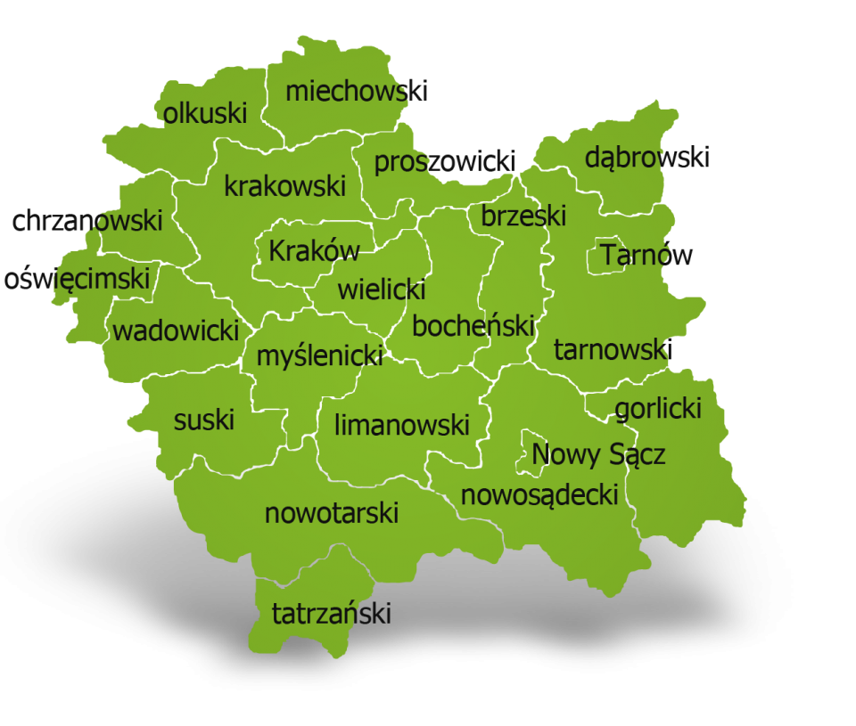

Zamek Królewski w Nowym Saczu
Zamek wzniesiony zosta³ przez króla Kazimierza Wielkiego w po³owie XIV wieku, czyli jeszcze kilkadziesi¹t lat przed bitwa pod Grunwaldem. Z zamku do dnia dzisiejszego zachowa³a siê Wie¿a Kowalska i fragmenty murów obronnych oraz zabudowañ. Potop szwedzki poczyni³ zniszczenia zamku, po których twierdza zaczê³a coraz bardziej podupadaæ. Stan zamku w pewnym stopniu polepszy³ siê w czasie zaborów, kiedy Austriacy wykonali jego remont. Zamek s³u¿y³ potem jako biura, koszary, wiêzienie i sk³ad broni.
